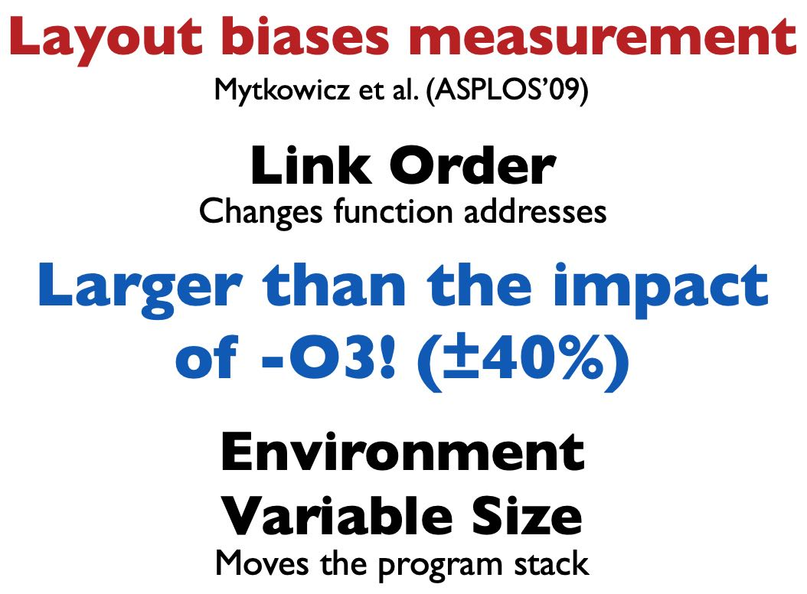
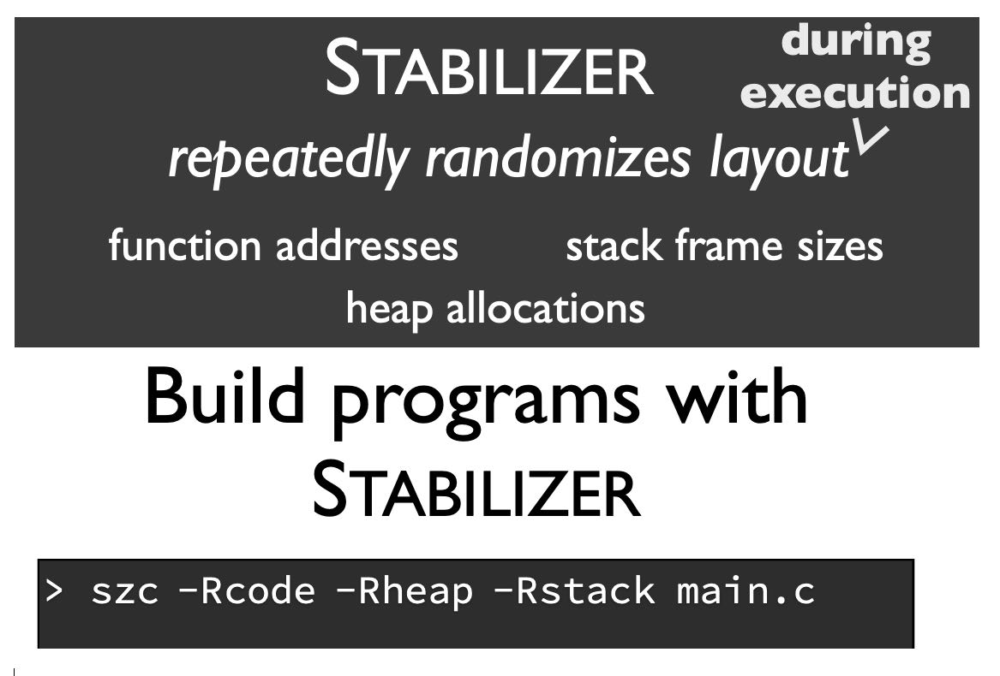
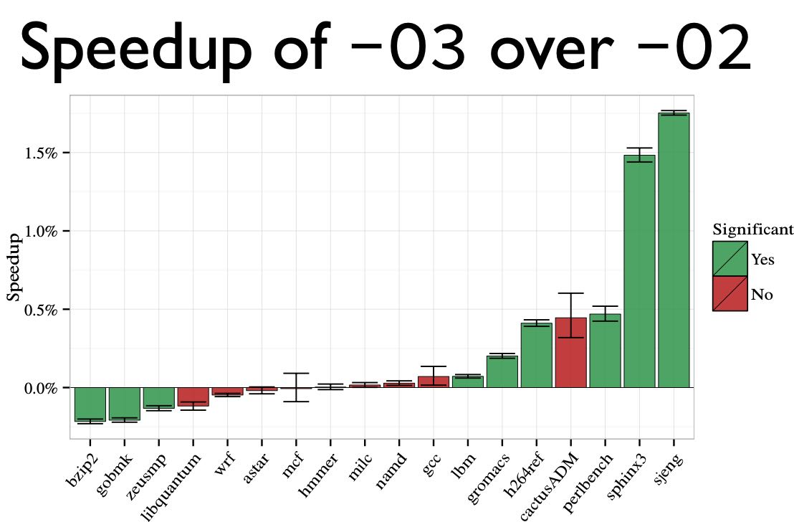
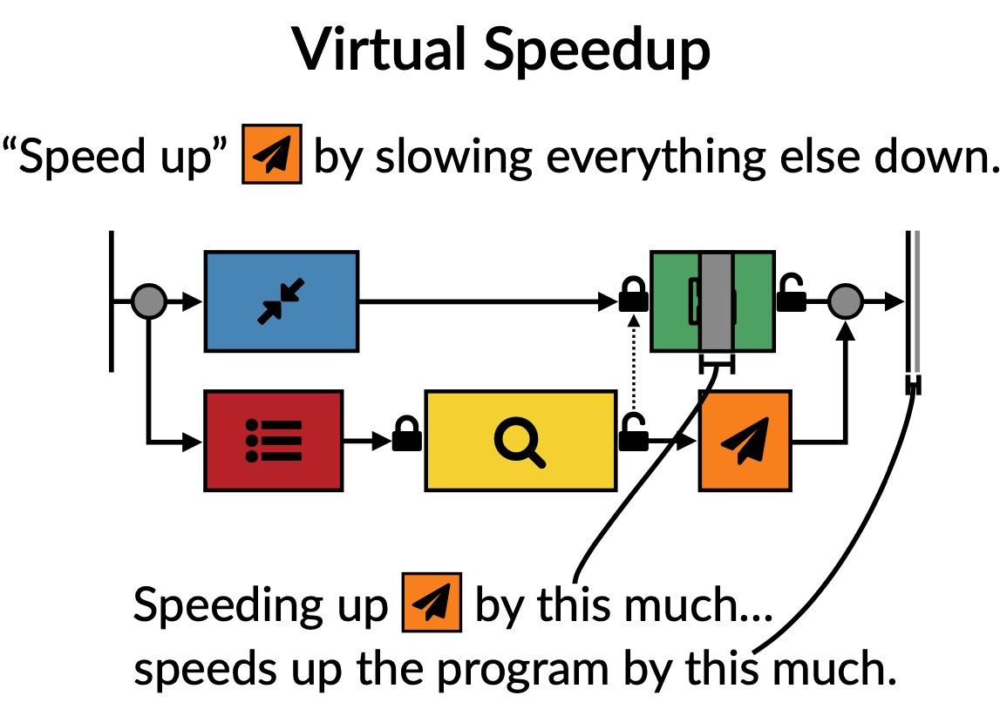
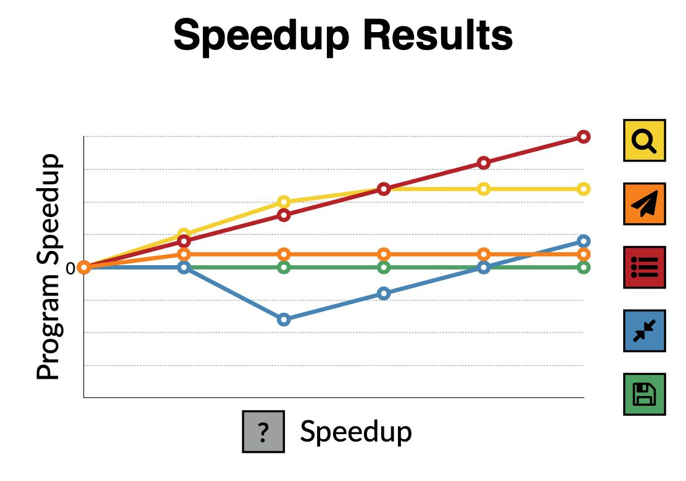
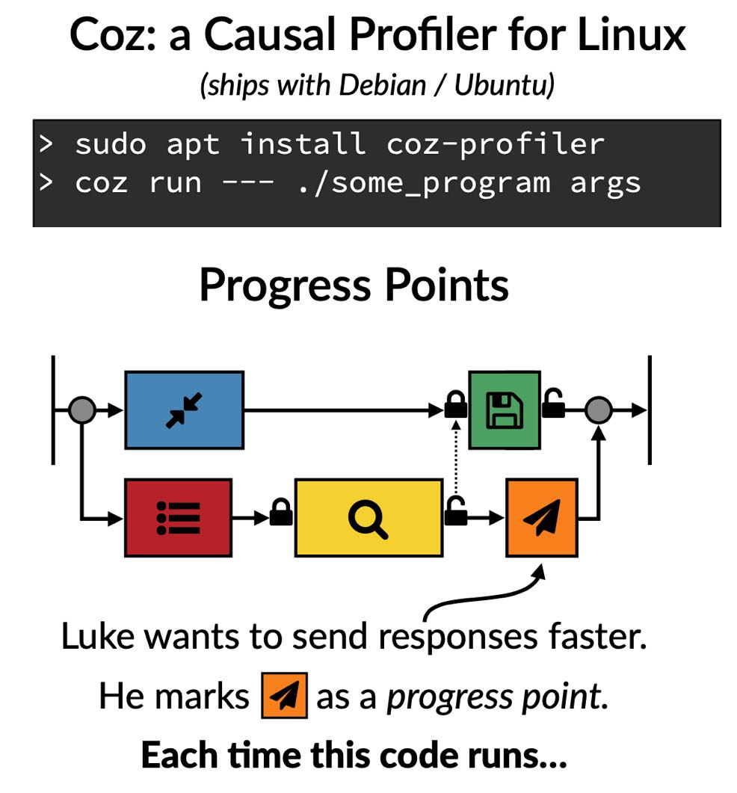
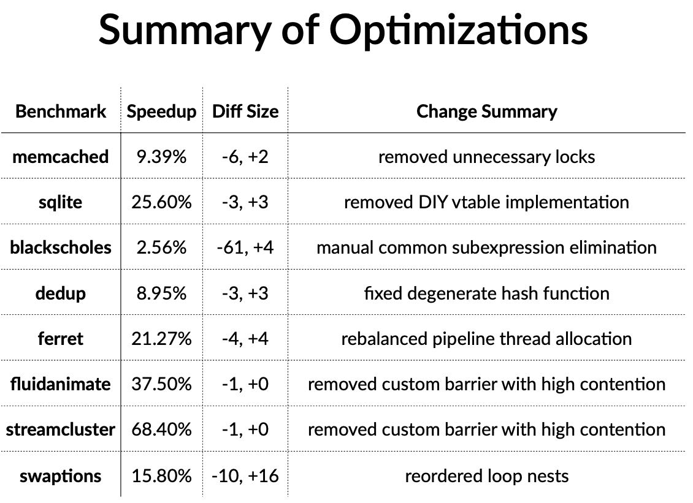

"Performance Matters" by Emery Berger
https://www.youtube.com/watch?v=r-TLSBdHe1A
即使代码没有发生任何变化，重新链接一次可能就跑的比原来要快。因为link order可能会出现变化，造成function addresses发生变化，从而造成branch predictor, inst cache miss, TLB cache miss都出现变化，性能差别甚至可以到40%

除了link order之外，需要执行环境也会有影响：libc, directory, username, alloc address, stack address等等。我们是否有办法可以消除这些影响呢？stabilizier. 在执行过程中不断地修改这些环境变量，从而尽可能地增加随机性。

通过增加随机性，得到某个符合正态分布的性能数据，然后通过假设检验来做t-test(如果p-value < 0.05, 那么认为之间差距是显著的）作者给出的几个程序可以看到，-O3相比-O2改进，有些是显著的，有些则没有那么显著。

接着作者介绍另外一个工具casual profiler. 传统的Profiler对于并行, 并发, 异步程序分析并不是特别好：通常我们只能发现频繁执行并且运行时间长的函数或者是代码，但是对于并行/并发/异步程序来说，频繁运行或者是长时间运行的代码可能只是调度器或者是临界代码。 我们真正想知道的其实是是，我们应该改进哪个部分代码，可以让总体运行时间更短。casual profile就是这么一种方法。
其实说来也不麻烦，就是对一个函数延迟/加速，然后观察延迟/加速之后对总体时间的变化。比如上图上存盘延迟个1s，最终时间只是缩短了0.1s, 说明可能改进效果并不大，没有必要去优化存盘时间。

针对每个函数/代码块做类似的分析，就可以得到下面这样加速图。可以看到对于红色线条的加速是最显著的，说明红色线条对应的代码块是我们需要改进的。

现在Linux就有这么一个profiler: coz. 但是这个工具并不是完全非入侵性的 https://github.com/plasma-umass/coz, 需要在代码中增加 progress point:相当于标记出代码块区域。

看上去这个工具可以非常有效地发现多线程的代码问题
